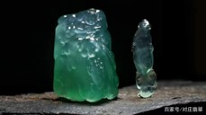
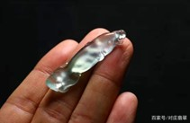
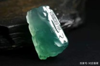
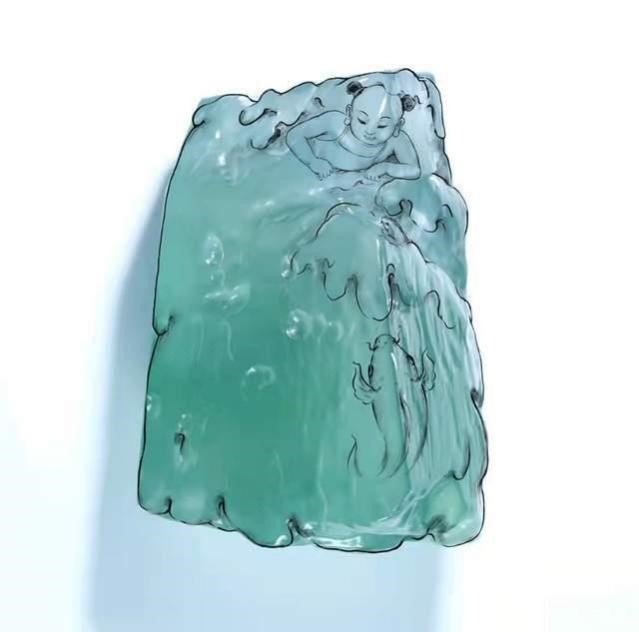
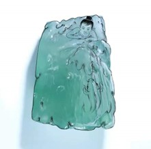

孝道，一种是中国人所最珍重的品德之一。“百行孝为先”被传诵至今，并演变成流传广泛的二十四孝故事。其中“卧冰求鲤”的故事也是人人口诵耳闻的经典，历经千年而不衰，甚至其含义越来越丰富。中国传统文化里的修身，是指涵养心性、修正身行，修身所遵循的“格物、致知、诚意、正心”，均离不开孝道。据《孔子家语》记载“立身有义矣，而孝为本”“是以君子不可以不修身；思修身，不可以不事亲”，意思就是孝道是修身的根本，要想成为君子，就要从孝亲做起，知恩报恩、饮水思源，这也是修身的前提条件。
真正的孝道的内涵，绝不是什么事都让父母给自己做主，而是不敢忘记父母的教诲，念念想着使父母光耀。《孝经》云：“立身行道，扬名于后世，以显父母，孝之终也。”通过修身立德以立身行道，从而能够扬名于后世，使父母感到非常的自豪光荣，这个孝道就做到了极致。这也是为什么中国传统文化会推崇孝行和孝子，反对愚孝和逃避责任。这件张炳光老师的作品《卧冰求鲤》，用种水色地融为一体的龙石种翡翠创作，料子极其难得，且作品题材直指人心最炽热之处，如春风化雨，观者无不如沐春风，为其题材所惊艳。张炳光老师为了展示料子最唯美的状态，三易其稿，用最精练的刀法，雕琢出作品场景里最自然、最纯真的状态。顺着料子的纹理雕琢出自然唯美的冰山，故事的主角王祥摸着胸口，表达出自己最强烈的情感，头发随风飘逸，既有天然童真的烂漫，又侧面描绘了王祥卧冰求鲤时室外的冰天雪地，让王祥的的动作与环境产生互动。